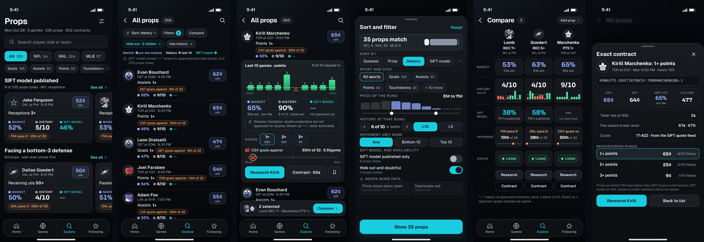
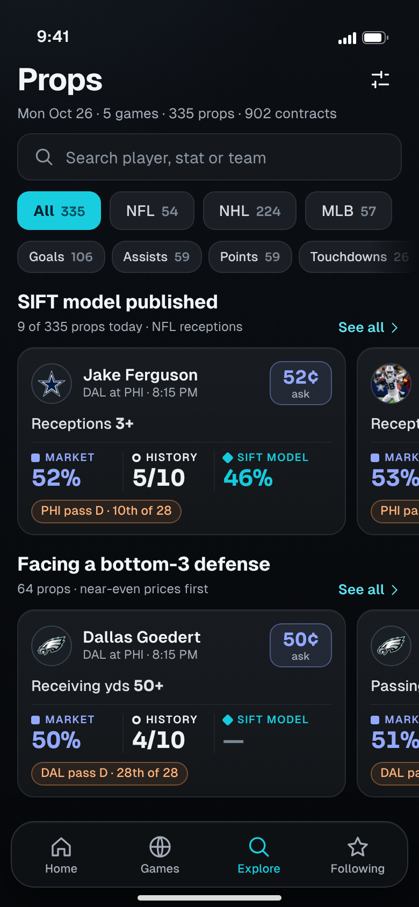
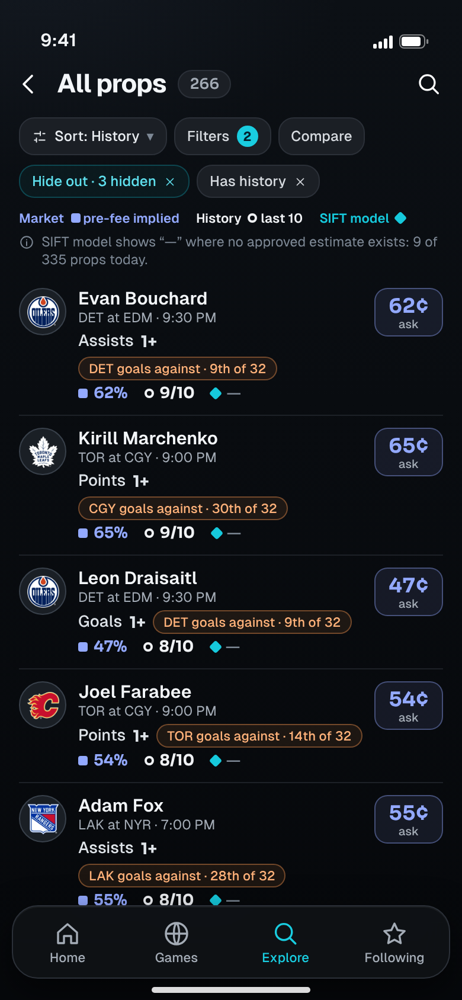
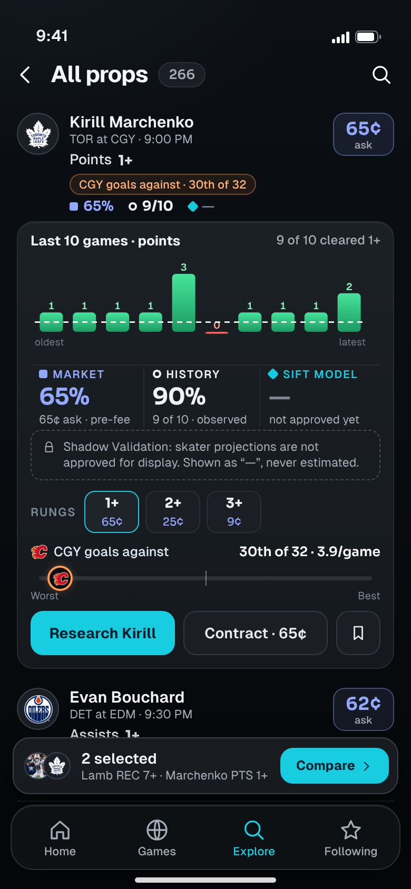
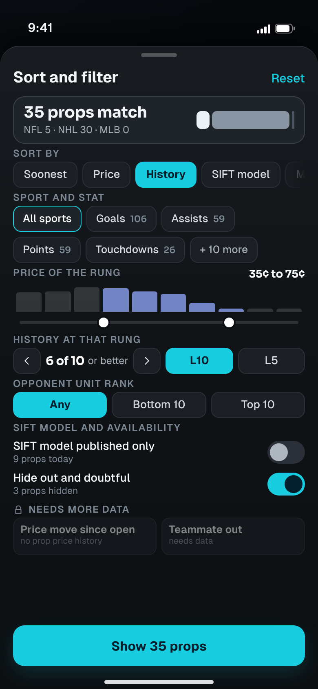
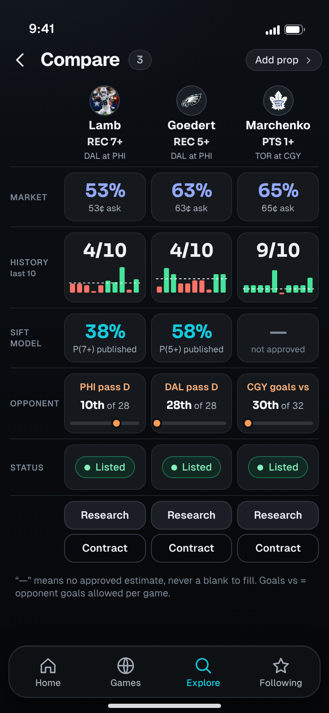
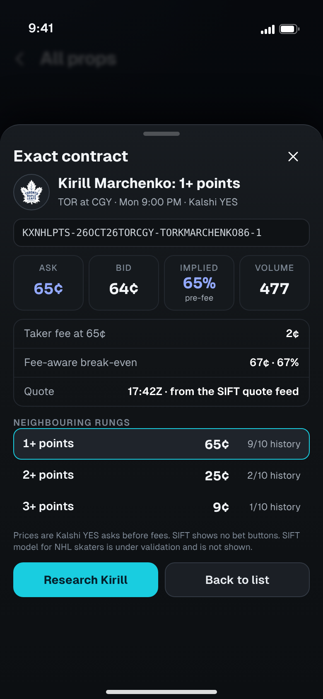

<title>SIFT Prop Discovery</title>
<meta name="claude:viewport-fit-sides" content="cover">
<link rel="stylesheet" href="https://fonts.googleapis.com/css2?family=Geist:wght@400;500;600;700&family=Sora:wght@600;700&display=swap">
<style>
  :root { color-scheme: dark; --bg:#080b10; --bg2:#0e1216; --panel:#16191e; --line:#272b32; --line2:#39414b; --cyan:#19cde0; --text:#f3f6f9; --muted:#a4acb6; --dim:#7d8895; --mkt:#93a9ff; --built:#3fd98f; --wire:#f5bd5b; --new:#ff6f91;
    --ui:'Geist',-apple-system,'SF Pro Text','Helvetica Neue',Arial,sans-serif; --num:'Sora','Geist',-apple-system,Arial,sans-serif; }
  * { box-sizing: border-box; }
  body { background: radial-gradient(110% 30% at 8% -4%, rgba(72,88,116,.13), transparent 62%), linear-gradient(180deg,#0c1015,#090c10 40%,#06080b); color: var(--text); font: 400 16px/1.55 var(--ui); padding-left: max(16px, env(safe-area-inset-left, 0px)); padding-right: max(16px, env(safe-area-inset-right, 0px)); padding-block: 28px 64px; -webkit-font-smoothing: antialiased; }
  main { max-width: 980px; margin: 0 auto; display: grid; gap: 44px; }
  h1 { font: 700 clamp(30px, 6vw, 46px)/1.08 var(--ui); letter-spacing: -.03em; text-wrap: balance; }
  h1 em { font-style: normal; color: var(--cyan); }
  h2 { font: 700 clamp(22px, 4vw, 28px)/1.2 var(--ui); letter-spacing: -.02em; text-wrap: balance; }
  h3 { font: 600 18px/1.3 var(--ui); letter-spacing: -.01em; }
  p { color: #c3c8ce; max-width: 66ch; } .dim { color: var(--dim); } .sm { font-size: 14px; }
  .eyebrow { font: 600 12px/1 var(--ui); letter-spacing: .1em; text-transform: uppercase; color: var(--cyan); }
  .tag { display: inline-block; font: 700 12px/1 var(--ui); letter-spacing: .06em; padding: 5px 8px; border-radius: 6px; color: #031523; }
  .tag.built { background: var(--built); } .tag.wire { background: var(--wire); } .tag.new { background: var(--new); }
  .hero { display: grid; gap: 14px; }
  .banner { display: flex; flex-wrap: wrap; gap: 8px 16px; padding: 12px 14px; border-radius: 14px; border: 1px solid var(--line); background: #11141a; font-size: 14px; color: var(--muted); }
  .banner b { color: var(--text); font-weight: 600; }
  .card { border-radius: 18px; border: 1px solid var(--line); background: linear-gradient(180deg, #181c21, #131619); padding: 18px; }
  .grid3 { display: grid; gap: 14px; grid-template-columns: repeat(auto-fit, minmax(220px, 1fr)); }
  .grid3 .card { display: grid; gap: 6px; align-content: start; } .grid3 .card p { font-size: 14.5px; }
  .lane { display: inline-flex; align-items: center; gap: 6px; font-weight: 600; }
  .lane i { width: 10px; height: 10px; display: inline-block; background: currentColor; border-radius: 3px; } .lane.h i { border-radius: 50%; background: transparent; border: 2.5px solid currentColor; } .lane.z i { transform: rotate(45deg); width: 9px; height: 9px; }
  .cmp { display: grid; gap: 14px; }
  .cmp img { width: 100%; height: auto; border-radius: 14px; border: 1px solid var(--line); display: block; }
  .cmp .cap { display: grid; grid-template-columns: repeat(3, 1fr); gap: 8px; font: 600 12px/1.2 var(--ui); letter-spacing: .08em; text-transform: uppercase; color: var(--dim); text-align: center; }
  ul.lost { display: grid; gap: 8px; padding-left: 20px; color: #c3c8ce; font-size: 15px; } ul.lost b { color: var(--text); font-weight: 600; }
  .screen { display: grid; gap: 22px; grid-template-columns: minmax(0, 390px) minmax(0, 1fr); align-items: start; }
  @media (max-width: 760px) { .screen { grid-template-columns: 1fr; } }
  .phone { position: relative; width: 100%; max-width: 390px; }
  .phone img { width: 100%; height: auto; display: block; border-radius: 26px; border: 1px solid var(--line); box-shadow: 0 18px 50px rgba(0,0,0,.5); }
  .toggle { margin-top: 10px; width: 100%; height: 44px; border-radius: 12px; border: 1px solid var(--line2); background: #1b1f25; color: var(--text); font: 600 14px var(--ui); cursor: pointer; }
  .toggle[aria-pressed='true'] { border-color: var(--cyan); color: var(--text); }
  .body { display: grid; gap: 14px; align-content: start; }
  .body h3 .id { font-family: var(--num); color: var(--cyan); margin-right: 8px; }
  .kv { display: grid; gap: 8px; } .kv div { display: grid; grid-template-columns: 112px 1fr; gap: 12px; font-size: 14.5px; } .kv dt { color: var(--dim); font-weight: 600; } .kv dd { color: #c3c8ce; }
  table { width: 100%; border-collapse: collapse; font-size: 14px; } th { text-align: left; font: 600 12px/1.2 var(--ui); letter-spacing: .08em; text-transform: uppercase; color: var(--dim); padding: 0 10px 10px 0; } td { padding: 10px 10px 10px 0; border-top: 1px solid #21252b; vertical-align: top; color: #cfe0ec; } td:first-child { color: var(--text); font-weight: 500; }
  .scroll { overflow-x: auto; -webkit-overflow-scrolling: touch; } .scroll table { min-width: 640px; }
  .sw { display: grid; gap: 8px; grid-template-columns: repeat(auto-fill, minmax(140px, 1fr)); } .sw div { border-radius: 12px; border: 1px solid rgba(255,255,255,.08); overflow: hidden; display: grid; font-size: 12.5px; } .sw i { display: block; height: 38px; } .sw span { padding: 7px 9px 8px; background: #101317; color: #c3c8ce; line-height: 1.3; } .sw span b { display: block; color: var(--text); font-weight: 600; font-size: 13px; }
  .cols2 { display: grid; gap: 14px; grid-template-columns: repeat(auto-fit, minmax(280px, 1fr)); } code { font: 13px ui-monospace, Menlo, monospace; color: #dfe4ea; }
  .ask { display: grid; gap: 10px; counter-reset: q; } .ask li { list-style: none; padding: 12px 14px; border-radius: 12px; border: 1px solid var(--line); background: #11141a; font-size: 15px; color: #c3c8ce; }
  .ask li b { color: var(--text); }
</style>

<main>
<header class="hero">
  <span class="eyebrow">Design review · design only · nothing here is built</span>
  <h1>Prop Discovery, <em>across every game</em></h1>
  <p>One place to find interesting props, cut the whole market universe, compare history and opponent matchups, read the approved SIFT model where it exists, and go straight to Player Research or the exact contract. Same ink and graphite system, same lane names (Market · History · SIFT model), same Built / Wire / New status layer.</p>
  <div class="banner"><span><b>Data on screen is real.</b> Today’s five games (NFL 1, NHL 3, MLB 1), 335 player props and 902 contracts from SIFT’s own quote feeds, captured 2026-10-26 17:42Z. Tap “Show data status” on any screen.</span></div>
  <div class="banner"><span class="tag built">BUILT</span><span>in v3 with real data</span><span class="tag wire">WIRE</span><span>published, not read by v3 yet</span><span class="tag new">NEW</span><span>needs data SIFT does not publish, or a new component</span></div>
</header>

<section style="display:grid;gap:16px">
  <div><span class="eyebrow">1 · The set</span><h2>Six screens, one research loop</h2><p class="dim sm" style="margin-top:6px">Discover → browse and sort → peek → compare → Player Research or the exact contract. Scroll sideways.</p></div>
  <div class="scroll" style="border-radius:16px;border:1px solid var(--line)"></div>
</section>

<section style="display:grid;gap:30px">
  <div><span class="eyebrow">2 · Screens</span><h2>What each one answers</h2></div>
  <article class="screen" data-pair="pd1">
    <div class="phone"><button class="toggle" aria-pressed="false">Show data status</button></div>
    <div class="body"><h3><span class="id">PD1</span>Discover: what is interesting today</h3>
      <dl class="kv"><div><dt>Question</dt><dd>What is worth a look across every game?</dd></div>
      <div><dt>Workflow</dt><dd>Opens on a title with today’s real universe (5 games, 335 props, 902 contracts), a search field, a sport rail with live counts, and stat chips that run across every family (goals, assists, points, touchdowns, receiving yards, hits, H+R+RBI and more). Shelves are curated by rules, never by an edge score: <b>SIFT model published</b> (the 9 props where an approved estimate exists today, nearest a coin flip first) and <b>Facing a bottom-3 defense</b> (64 props, near-even prices first). Each card carries the three lanes, the opponent unit chip and the ask.</dd></div>
      <div><dt>Taps</dt><dd>Card → peek and row actions (PD3). “See all” → the sorted list (PD2) with that shelf’s filter applied. Sliders icon → PD4. Sport or stat chip → PD2 pre-filtered. Search → PD2.</dd></div>
      <div><dt>Honesty</dt><dd>The “SIFT model published” shelf says it is NFL receptions only. Where the model lane has no approved estimate the card shows a dim “—”. No shelf ranks by disagreement between lanes.</dd></div>
      <div><dt>Data</dt><dd><span class="tag built">BUILT</span> contracts and ask prices (Kalshi quote feeds). <span class="tag wire">WIRE</span> the cross-game index (join of the per-game feeds already published), shelf rules, sport and stat counts, history and opponent chips.</dd></div></dl></div>
  </article>
  <article class="screen" data-pair="pd2">
    <div class="phone"><button class="toggle" aria-pressed="false">Show data status</button></div>
    <div class="body"><h3><span class="id">PD2</span>All props: sort and browse the whole universe</h3>
      <dl class="kv"><div><dt>Question</dt><dd>Show me the strongest history, price or matchup across all of it.</dd></div>
      <div><dt>Workflow</dt><dd>A single list of 266 props (3 hidden as OUT, 66 without history excluded by “Has history”). Sort is History here: hit count first, then closeness to a coin flip. Active filters are removable chips. A legend repeats the lane names and marks, and a one-line note says how many props have an approved model estimate (9 of 335). Each row: player, game and time, stat and rung, opponent chip, the three lanes and the ask.</dd></div>
      <div><dt>Taps</dt><dd>Row → expands in place (PD3). Price pill → exact contract (PD6). Sort or Filters → PD4. Compare → multi-select mode. Search icon → the same query field as PD1.</dd></div>
      <div><dt>Honesty</dt><dd>Rows without a figure show “—”. Sorting by History never implies it predicts anything; the legend and note stay on screen.</dd></div>
      <div><dt>Data</dt><dd><span class="tag built">BUILT</span> price, volume, game time sorting. <span class="tag wire">WIRE</span> History sort and the opponent chip (player logs and ranking documents), availability hiding.</dd></div></dl></div>
  </article>
  <article class="screen" data-pair="pd3">
    <div class="phone"><button class="toggle" aria-pressed="false">Show data status</button></div>
    <div class="body"><h3><span class="id">PD3</span>Peek: depth without leaving the list</h3>
      <dl class="kv"><div><dt>Question</dt><dd>Is this one real? What does the sample look like?</dd></div>
      <div><dt>Workflow</dt><dd>One tap expands a row in place: last-10 bars against the rung, the Market, History and SIFT model trio, a plain reason when the model is withheld (“Shadow Validation: skater projections are not approved for display”), the neighbouring rungs with prices, the opponent unit on a worst-to-best track, then three actions. A compare tray collects selections without hiding the list.</dd></div>
      <div><dt>Taps</dt><dd>Research → Player Research (P1) for this player and stat. Contract → PD6. Bookmark → Following. Rung chips switch the line shown. Tray → PD5.</dd></div>
      <div><dt>Honesty</dt><dd>Withheld model estimates show the reason and “—”, never a number. History 9 of 10 is observed frequency, not a probability SIFT is claiming.</dd></div>
      <div><dt>Data</dt><dd><span class="tag built">BUILT</span> price, rungs, log bars (NFL and NHL logs), opponent rank where the ranking document is published. <span class="tag wire">WIRE</span> the model trio gating. <span class="tag new">NEW</span> UI only: compare tray and in-list expansion (no new data).</dd></div></dl></div>
  </article>
  <article class="screen" data-pair="pd4">
    <div class="phone"><button class="toggle" aria-pressed="false">Show data status</button></div>
    <div class="body"><h3><span class="id">PD4</span>Sort and filter the entire universe</h3>
      <dl class="kv"><div><dt>Question</dt><dd>Cut 335 props to the ones that fit how I research.</dd></div>
      <div><dt>Workflow</dt><dd>A sheet with a live count (“35 props match”, split by sport) as filters change: sort (Soonest, Price, History, SIFT model, Matchup, Volume), sport and stat, a price histogram with a range slider, a history threshold (6 of 10 or better; L10 or L5), opponent unit rank (any, bottom 10, top 10), SIFT-model-published-only, hide out and doubtful. Facets SIFT cannot support are visible but locked under “Needs more data”.</dd></div>
      <div><dt>Taps</dt><dd>Apply → PD2 with these filters. Reset clears everything. Locked chips explain the missing data and do nothing.</dd></div>
      <div><dt>Honesty</dt><dd>The locked section is the product’s honesty about its limits. SIFT model sort exists, but it sorts by the model’s own published probability only; there is no model-minus-market sort.</dd></div>
      <div><dt>Data</dt><dd><span class="tag built">BUILT</span> price and volume. <span class="tag wire">WIRE</span> history, opponent rank, availability, model-published flags. <span class="tag new">NEW</span> locked facets: price move since open (no prop price history) and teammate out (not published).</dd></div></dl></div>
  </article>
  <article class="screen" data-pair="pd5">
    <div class="phone"><button class="toggle" aria-pressed="false">Show data status</button></div>
    <div class="body"><h3><span class="id">PD5</span>Compare props side by side</h3>
      <dl class="kv"><div><dt>Question</dt><dd>Which of these three is better supported, and by what?</dd></div>
      <div><dt>Workflow</dt><dd>Three props in columns, five rows in the same lane order: Market, History (with mini bars against the rung), SIFT model, Opponent unit on a track, Status. The columns can be different sports; each uses its own units (“goals vs” is the opponent’s goals allowed per game). Research and Contract buttons sit at the bottom of every column.</dd></div>
      <div><dt>Taps</dt><dd>Column header → Player Research. Contract → PD6. Add prop → back to PD2 in select mode.</dd></div>
      <div><dt>Honesty</dt><dd>A column with no approved model estimate shows “—” and “not approved”. No column is ranked, scored or marked as best.</dd></div>
      <div><dt>Data</dt><dd><span class="tag built">BUILT</span> market, status. <span class="tag wire">WIRE</span> history, model, opponent. <span class="tag new">NEW</span> UI only.</dd></div></dl></div>
  </article>
  <article class="screen" data-pair="pd6">
    <div class="phone"><button class="toggle" aria-pressed="false">Show data status</button></div>
    <div class="body"><h3><span class="id">PD6</span>The exact contract</h3>
      <dl class="kv"><div><dt>Question</dt><dd>What precisely would this price?</dd></div>
      <div><dt>Workflow</dt><dd>The contract itself: Kalshi ticker, ask, bid, pre-fee implied probability and volume; the taker fee at that price and the fee-aware break-even; the quote timestamp and source; the neighbouring rungs with each rung’s history. The disclaimer says SIFT shows no bet buttons.</dd></div>
      <div><dt>Taps</dt><dd>Research → Player Research. Back → the list at the same scroll position. A neighbouring rung switches the contract shown.</dd></div>
      <div><dt>Honesty</dt><dd>Break-even is shown beside the implied probability so the difference is visible, but SIFT never labels either as good value. NHL skater model estimates are noted as under validation and not shown.</dd></div>
      <div><dt>Data</dt><dd><span class="tag built">BUILT</span> ticker, ask, bid, volume (quote feed), taker fee formula ceil(0.07 · p · (1 − p)). <span class="tag wire">WIRE</span> rung-by-rung history.</dd></div></dl></div>
  </article>
</section>

<section style="display:grid;gap:16px">
  <div><span class="eyebrow">3 · Coverage today</span><h2>What the data supports, row by row</h2><p class="dim sm" style="margin-top:6px">Captured 2026-10-26 17:42Z from the five per-game quote feeds. Counts are exact.</p></div>
  <div class="card scroll"><table>
    <thead><tr><th>Sport</th><th>Games</th><th>Props</th><th>With history</th><th>With opponent unit rank</th><th>SIFT model published</th><th>Projection published, ledger withholds</th><th>No projection row</th></tr></thead>
    <tbody>
      <tr><td>NFL</td><td>1</td><td>54</td><td>48</td><td>54</td><td>9 (receptions)</td><td>22</td><td>23</td></tr>
      <tr><td>NHL</td><td>3</td><td>224</td><td>221</td><td>224</td><td>0</td><td>208 (Shadow Validation)</td><td>16</td></tr>
      <tr><td>MLB</td><td>1</td><td>57</td><td>0</td><td>0</td><td>0</td><td>0</td><td>57</td></tr>
      <tr><td><b>Total</b></td><td>5</td><td><b>335</b> (902 contracts)</td><td>269</td><td>278</td><td>9</td><td>230</td><td>96</td></tr>
    </tbody></table></div>
  <div class="cols2">
    <div class="card"><h3>Stat families on the board</h3><p class="sm">NFL: touchdowns 26, receiving yards 11, receptions 10, rushing yards 5, passing yards 2. NHL: goals 106, assists 59, points 59. MLB: hits, total bases, H+R+RBI, RBIs and stolen bases 11 each, strikeouts 2.</p></div>
    <div class="card"><h3>What this means for the design</h3><p class="sm">The universe is broad, but the SIFT model lane is mostly empty and MLB has no history or matchup yet. The screens treat that as normal: “—” with a reason, locked facets, and MLB rows that offer only price and contract. Three props are OUT and hidden by default; 64 face a bottom-3 defense.</p></div>
  </div>
</section>

<section style="display:grid;gap:16px">
  <div><span class="eyebrow">4 · Dependencies</span><h2>Built, wire and new</h2></div>
  <div class="card scroll"><table>
    <thead><tr><th>Capability</th><th>Status</th><th>Source and notes</th></tr></thead>
    <tbody>
      <tr><td>Contract ladder, ask, bid, volume, ticker</td><td><span class="tag built">BUILT</span></td><td>Per-game Kalshi quote feed (<code>live-quotes</code> branch). v3 already reads it for game and player pages.</td></tr>
      <tr><td>Taker fee and break-even</td><td><span class="tag built">BUILT</span></td><td>Published fee formula; computed from the ask.</td></tr>
      <tr><td>Cross-game prop index (all games, one list)</td><td><span class="tag wire">WIRE</span></td><td>Client-side join of the per-game quote feeds already published; load per-game lazily. A published all-games manifest would be faster but is optional.</td></tr>
      <tr><td>Last-10 history at each rung</td><td><span class="tag wire">WIRE</span></td><td>NFL history layer and NHL player logs exist. The list view needs a per-player fetch, lazy for visible rows. MLB has none.</td></tr>
      <tr><td>Opponent unit rank on every row</td><td><span class="tag wire">WIRE</span></td><td>Ranking documents (NFL pass, rush, overall) and NHL goals against per game. MLB has none.</td></tr>
      <tr><td>SIFT model lane (P(≥n))</td><td><span class="tag wire">WIRE</span></td><td>Projection-data feeds, gated by the approval ledger: only NFL receptions, targets and completions are promoted today. Everything else stays “—”.</td></tr>
      <tr><td>Availability (OUT, doubtful)</td><td><span class="tag wire">WIRE</span></td><td>Published event documents.</td></tr>
      <tr><td>Search, sport and stat rail, shelves, sort, filters</td><td><span class="tag wire">WIRE</span></td><td>Client-side rules over the joined index. No new data.</td></tr>
      <tr><td>Compare tray, in-place peek, exact-contract sheet</td><td><span class="tag new">NEW</span> UI</td><td>New components only; every figure they show is above.</td></tr>
      <tr><td>Open Player Research from a row</td><td><span class="tag built">BUILT</span></td><td>NFL, NHL, NBA. MLB player pages are not available.</td></tr>
      <tr><td>MLB history, matchup and model lanes</td><td><span class="tag new">NEW</span> data</td><td>Not published. MLB rows show price, contract and “—”.</td></tr>
      <tr><td>Price move since open (props), teammate-out filter</td><td><span class="tag new">NEW</span> data</td><td>Not published. Shown only as locked facets in PD4.</td></tr>
      <tr><td>Model-minus-market “edge” sort or badge</td><td>Not designed</td><td>Never derived. See decision 2 below.</td></tr>
    </tbody></table></div>
</section>

<section style="display:grid;gap:14px">
  <div><span class="eyebrow">5 · Your call</span><h2>Before anything is built</h2></div>
  <ol class="ask">
    <li><b>Approve PD1 to PD6,</b> or tell me what to change on a specific screen. Nothing is implemented until you do.</li>
    <li><b>One optional sort I recommend leaving out:</b> a “model vs market gap” sort. It would be the only place two lanes are compared directly, and with 9 approved estimates today it would rank almost nothing. The lane rule (“never subtracted into an edge”) stays intact if you agree.</li>
    <li><b>Quote time:</b> these mockups use quotes captured at 17:42Z; the earlier P1 to P4 examples use 03:08Z. That is a capture difference only and is disclosed on every screen that shows a price.</li>
    <li><b>Scope of the first build, once approved:</b> NFL and NHL fully (history, opponent, model gating), MLB with price and contract only, compare limited to three props.</li>
    <li><b>Next design after this:</b> Team Research, then Stat Detail and Rankings, in the same system and with the same status layer.</li>
  </ol>
  <p class="dim sm">Source of every row: docs/sift3/redesign/props.js, a frozen snapshot of SIFT’s own quote feeds, history layer and ranking documents (captured 2026-10-26 17:42Z). Mockup chrome (status bar, home indicator) is for presentation only; the app has no device chrome.</p>
</section>
</main>

<script>
  document.querySelectorAll('.screen').forEach(function (s) {
    var id = s.getAttribute('data-pair'), img = s.querySelector('.phone img'), btn = s.querySelector('.toggle');
    btn.addEventListener('click', function () {
      var on = btn.getAttribute('aria-pressed') !== 'true';
      btn.setAttribute('aria-pressed', on ? 'true' : 'false');
      btn.textContent = on ? 'Hide data status' : 'Show data status';
      img.src = 'out/' + id + (on ? '-annot' : '') + '.png';
    });
  });
</script>
